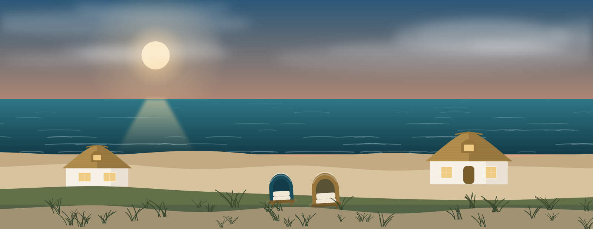
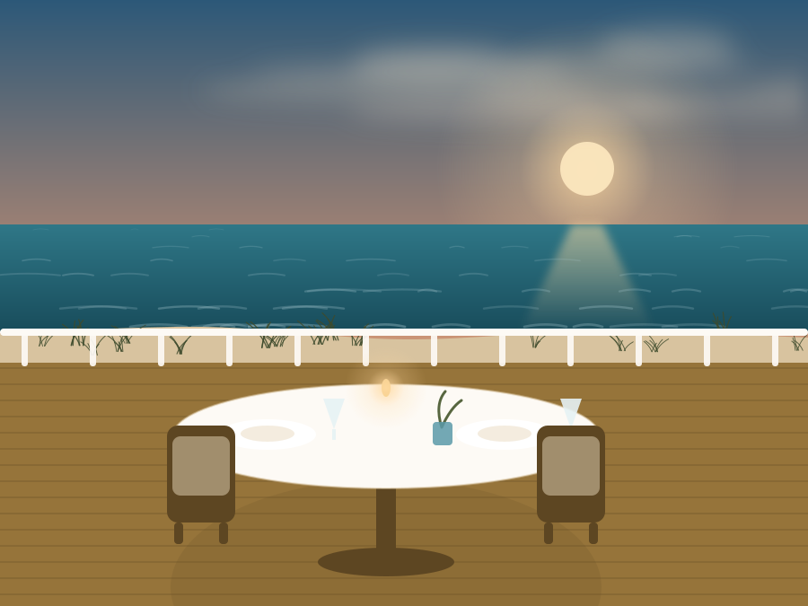

Fisch aus der Ostsee
Was die Kutter der Küste anlanden, steht am selben Tag auf der Karte: Dorsch, Hering, Zander aus dem Bodden.

Kulinarik
Fisch aus der Ostsee, Wild und Pilze aus dem Darßwald, Gemüse von den Höfen des Fischlands — und nachmittags Kuchen aus der eigenen Backstube.
Die Karte wechselt mit dem, was die Saison und die Lieferanten der Region hergeben. Im Frühjahr ist es der Hering, im Herbst der Wald, im Winter das Schmoren.
Wir kochen bodenständig und sorgfältig: erkennbare Zutaten, klare Aromen, nichts, was erklärt werden müsste. Wer möchte, bekommt zu jedem Gang eine Empfehlung aus dem Weinkeller — auch glasweise.

Brot vom Bäcker, Fisch, Käse und Aufschnitt aus der Region, Obst, Eierspeisen nach Wunsch. Bei gutem Wetter draußen im Frühstücksgarten.
Wenn der Morgen langsamer beginnen soll: Sagen Sie am Vorabend Bescheid, dann kommt das Frühstück zu Ihnen.
Hausgemachter Kuchen, wechselnd nach Jahreszeit — der klassische Abschluss eines Strandspaziergangs.
Drinnen im Restaurant oder draußen auf der Terrasse, solange die Sonne es zulässt. Tischreservierung für Hausgäste selbstverständlich.
Was die Kutter der Küste anlanden, steht am selben Tag auf der Karte: Dorsch, Hering, Zander aus dem Bodden.
Wild, Pilze und Kräuter aus dem Nationalpark vor der Haustür — im Herbst die stärkste Zeit der Küche.
Kuchen und Torten entstehen im Haus. Was übrig bleibt, gibt es abends nicht mehr — das ist das Qualitätsmerkmal.
„Am schönsten ist der Abend, an dem man nach dem Essen einfach sitzen bleibt, weil die Sonne noch nicht ganz weg ist.“
Unverträglichkeiten und Wünsche: Sagen Sie uns bei der Anfrage Bescheid — vegetarisch, vegan, glutenfrei oder anderes lässt sich fast immer einrichten, wenn die Küche es vorher weiß.
Halbpension ist zu jedem Aufenthalt zubuchbar — sagen Sie uns einfach in der Anfrage Bescheid.